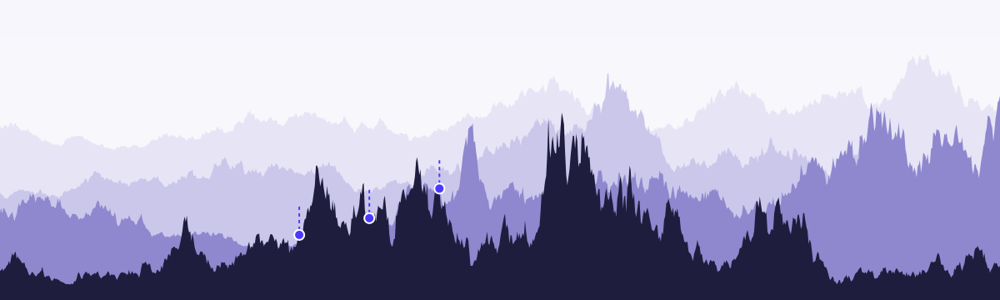

Brownian search
Few-shot search on rugged landscapes modelled by Brownian-family paths.

Performance often varies roughly with position: a strategy, a design parameter, a location on a map. Evaluations are expensive, so a searcher can afford only a few before it must commit.
Modelling the landscape as a path of a Brownian-family process, such as the exponential of an Ornstein–Uhlenbeck path, turns these decisions into problems about path extremes and conditioned paths. Some of them can be solved exactly.
The Brownian landscape was introduced by Callander (2008) and used for search by Callander (2011a). The introduction walks through that literature by the number of evaluations the searcher gets.
The questions
- Where to evaluate next, given a few observed values and a model of how the landscape varies.
- When to stop searching, and where to commit.
- How the answers change with the objective: the value at the final point, the best value found, or the chance of beating the best seen so far.
- How the answers change with the landscape: roughness, correlation length, dimension, and the number of evaluations allowed.
Results
When the Grass Is Greener solves the three-evaluation problem on an exponentiated Ornstein–Uhlenbeck landscape, paid at the final point. The optimal rule abandons a below-median incumbent, reverts after a disappointing trial, commits between two good positions, and stays put once a position is strong enough.
Commitment between positions rests on a variance-ratio identity. When the two observed log-values are equal, every interior position has the same conditional mean as an explicit exterior alternative and a conditional variance larger by the factor
$$\frac{1+\rho}{1-\rho},$$where $\rho$ is the correlation between the two observed positions.
The rule has been tested as a line search inside derivative-free optimizers and on measured radio signal strength.
Directions
- Policies for more than three evaluations, where closed forms end: value functions by dynamic programming on a lattice.
- Objectives beyond the final value: the chance of beating the best seen, quantiles of the best found, and the expected path maximum.
- Search in several dimensions, on fields with exponential and other metric correlations.
- How people search rugged landscapes, measured with a browser game.
Related sites
- brownianbandit: a controller prunes many paths under a budget, where here a searcher samples one path a few times. Both maximize an expected extreme.
- winning: exact finite-sample laws of the maximum, argmax and first passage of Gauss–Markov paths.
Cite
Cotton, P. (2026). When the Grass Is Greener: Three-Shot Search on Exponentiated Gaussian Landscapes. Working paper. First version April 6, 2022. PDF.